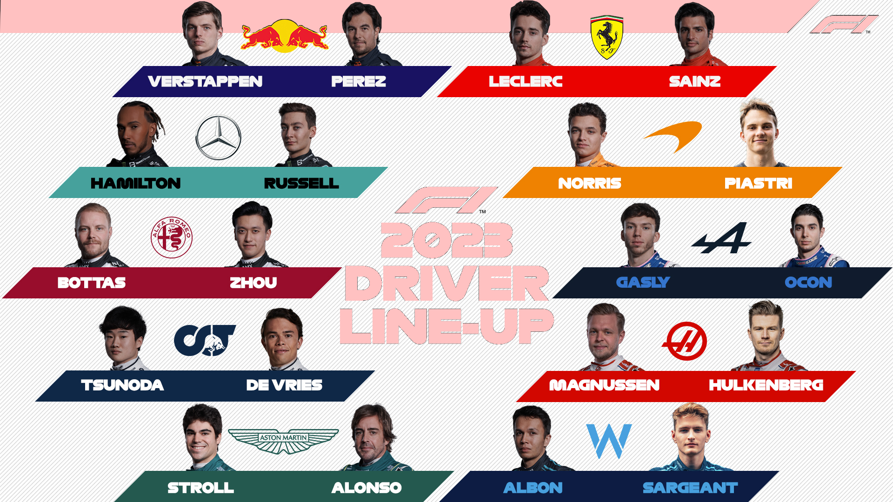

HISTORIA
Historia Formuły 1 zaczyna się w 1950 roku, kiedy to odbył się pierwszy sezon mistrzostw świata.
W tamtym czasie rywalizacja odbywała się w zasadzie tylko na torach europejskich, a w sumie w ciągu całego sezonu odbywało się tylko siedem wyścigów.
Wraz z upływem lat Formuła 1 stała się coraz popularniejsza, a liczba wyścigów rosła. Zaczęły się również pojawiać ekipy spoza Europy, takie jak Ferrari czy Brabham.
Wraz z rozwojem technologii i wprowadzaniem nowych przepisów, samochody stały się coraz szybsze i bardziej zaawansowane.
W latach 60. i 70. XX wieku Formuła 1 była jednym z najpopularniejszych sportów na świecie, a jej gwiazdy, takie jak Jackie Stewart, Jim Clark czy Niki Lauda, osiągały kultowy status.
Niestety, w tamtych czasach także wyścigi były bardzo niebezpieczne, a wielu kierowców zginęło w wypadkach.
W kolejnych dziesięcioleciach Formuła 1 nadal się rozwijała, a wyścigi stały się coraz bardziej widowiskowe i emocjonujące.
Wprowadzono także wiele zmian technologicznych, takich jak wprowadzenie silników hybrydowych w 2014 roku.
Dzisiaj Formuła 1 jest jednym z najbardziej popularnych sportów na świecie, a jej kierowcy i ekipy to gwiazdy o międzynarodowej sławie.
Sezon mistrzostw świata składa się z około dwudziestu wyścigów, które odbywają się na torach w różnych częściach świata. Wyścigi są transmitowane na całym świecie, a Formuła 1 przyciąga miliony widzów.
Aby wczuć się w klimat F1 posłuchajmy intra F1
Aktualności
Nowy sezon Formuły 1 rozpoczęty! Oto tegoroczni kierowcy:

A oto ich bolidy:
Skrót ostatniego wyścigu
Kalendarz wyścigów
| Data | Nazwa GP | Miejsce | Status | Zwycięzca |
|---|---|---|---|---|
| 3-5 Marca | Bahrain GP | Sakhir | ✓ | Max Verstappen (RB) |
| 17-19 Marca | Saudi Arabia GP | Jeddah | ✓ | Sergio Pérez (RB) |
| 31 Marca-2 Kwietnia | Australian GP | Melbourne | ✓ | Max Verstappen (RB) |
| 28-30 Kwietnia | Azerbaijan GP | Baku | 🏁 | ? |
| 5-7 Maja | Miami GP | Miami | ✕ | ? |
| 19-21 Maja | Emilia Romagna GP | Imola | ✕ | ? |
| 26-28 Maja | Monaco GP | Monaco | ✕ | ? |
| 2-4 Czerwca | Spanish GP | Barcelona | ✕ | ? |
| 16-18 Czerwca | Canadian GP | Montreal | ✕ | ? |
| 30 Czerwca-2 Lipca | Austrian GP | Spielberg | ✕ | ? |
| 7-9 Lipca | British GP | Silverstone | ✕ | ? |
| 21-23 Lipca | Hungarian GP | Budapeszt | ✕ | ? |
| 28-30 Lipca | Belgian GP | Spa | ✕ | ? |
| 25-27 Sierpnia | Dutch GP | Zandvoort | ✕ | ? |
| 1-3 Września | Italian GP | Monza | ✕ | ? |
| 15-17 Września | Singapore GP | Singapur | ✕ | ? |
| 22-24 Września | Japanese GP | Suzuka | ✕ | ? |
| 6-8 Października | Qatar GP | Losail | ✕ | ? |
| 20-22 Października | United States GP | Austin | ✕ | ? |
| 27-29 Października | Mexican GP | Mexico City | ✕ | ? |
| 3-5 Listopada | Brazilian GP | Sao Paulo | ✕ | ? |
| 16-18 Listopada | Las Vegas GP | Las Vegas | ✕ | ? |
| 24-26 Listopada | Abu Dhabi GP | Yas Marina | ✕ | ? |